Государственное унитарное предприятие Донецкой Народной Республики «Республиканский меди
холдинг» (ГУП ДНР «РМХ») — официальный сайт

Телеканал «Первый Республиканский
Канал»
Подробнее

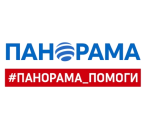
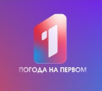
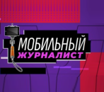
Руководитель:
ПЕТРЕНКО
Виктор
Евгеньевич
Виктор
Евгеньевич
Сфера деятельности:
"Первый Республиканский Канал ДНР" - это официальный государственный телеканал Донецкой Народной Республики. В эфир впервые вышел 4 мая 2014 года как оппозиция украинским СМИ, передававшим искаженную информацию о событиях в Донбассе.
"Первый Республиканский Канал ДНР" - это официальный государственный телеканал Донецкой Народной Республики. В эфир впервые вышел 4 мая 2014 года как оппозиция украинским СМИ, передававшим искаженную информацию о событиях в Донбассе.
О канале:
На данный момент телеканал является дирекцией ГУП ДНР "Республиканский медиа холдинг".
Номер лицензии 033-00114-77/00676237 выдан РКН 08.09.2023 года.
Директор дирекции телекомпании: Петренко В.Е.
За весомый вклад в реализацию государственной политики в сфере СМИ, высокий профессионализм и самоотверженный труд в условиях проведения специальной военной операции на территории Донецкой Народной Республики коллектив "Первого республиканского Канала ДНР" не раз удостоен грамотами и благодарностями Главы Республики Дениса Пушилина.
Телепроекты:
В эфире телеканала более 20 телепроектов.
"Мы русские", "Настоящие", "Панорама", "Политкухня", "В центре внимания", "Панорама помоги" и многие другие.
Контакты для связи:
Контакты рекламного отдела:
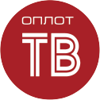
Телеканал «Оплот»
Подробнее
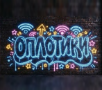
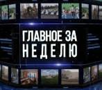
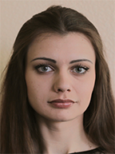
Руководитель:
МЕШКОВСКАЯ
Марина
Константиновна
Марина
Константиновна
Сфера деятельности:
"Оплот" является информационно-аналитическим телеканалом. Его деятельность включает:
"Оплот" является информационно-аналитическим телеканалом. Его деятельность включает:
Производство программ:
Создание собственных телепередач различных жанров – от новостн выпусков и аналитических программ до документальных фильмов и тематических проектов. Среди самых популярных: новости из уст детей "ОПЛОТИКИ", телепроект "За дело", юридическая телепрограм "Бюрократка" и другие. Информационные сюжеты: Ежедневное освещение событий, происходящих в ДНР и за ее пределами, с фокусом на политическую экономическую и социальную жизнь Республики в Программе "Главное" Вещание: Распространение телевизионного сигнала на территория ДНР, а также, в некоторых случаях, через интернет-платформы для охвата более широкой аудитории.
Достижения:
"Оплот" внес существенный вклад в становление медиасистемы ДНР. Канал стал площадкой освещения ключевых событий и предоставления жителям региона доступа к альтернативному украинским СМИ информационному потоку. В условиях информационной блокады и внешнего давления, "Оплот" стал важным инструментом коммуникации.
Контакты для связи и рекламного отдела:
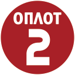
Телеканал «Оплот-2»
Подробнее
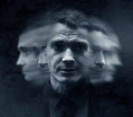
Руководитель:
МЕШКОВСКАЯ
Марина
Константиновна
Марина
Константиновна
Сфера деятельности:
"Оплот-2" во многом дублирует и дополняет функционал "Оплота", расширяя возможности вещания.
"Оплот-2" во многом дублирует и дополняет функционал "Оплота", расширяя возможности вещания.
Производство и трансляция контента:
Показ приобретенных и собственных телепередач, так и ретрансляция контента с основного канала.
Информационное освещение:
Углубленное освещение событий, региональных проблем, культурной жизни.
Дополнительное вещание:
Обеспечение более широкого охвата аудитории, особенно в отдаленных районах, где приём основного канала может быть затруднён.
Программная политика:
Формирование расписания, учитывающего интересы различных групп населения.
Достижения:
"Оплот-2" способствовал укреплению медийного присутствия ДНР, увеличив доступность информации для жителей.
Контакты для связи и рекламного отдела:
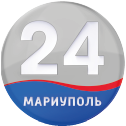
Телеканал
«Мариуполь 24»
«Мариуполь 24»
Подробнее
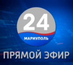
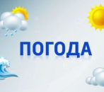
Руководитель:
ТЕРЕЩЕНКО
Виктория
Валерьевна
Виктория
Валерьевна
Сфера деятельности:
Телеканал, работающий для зрителя. Полный цикл медиапроизводства: телевещание, новостные выпуски, репортажи, авторские передачи (социальные, культурные, образовательные, детские, патриотические, публицистические), выездные съемки, медиасопровождение инициатив, развитие цифровых платформ.
История:
Телеканал «МАРИУПОЛЬ 24» был основан 16 сентября 2022 года. С 2025 года входит в состав ГУП ДНР «Республиканский медиахолдинг». Мы первый и единственный телеканал в возрождающемся Мариуполе! С момента основания канал развивается как современная региональная медиаплощадка, ориентированная на оперативное информирование, создание качественного контента и укрепление связи с аудиторией.
Достижения:
• Формирование стабильной сетки вещания;
• Создание собственной линейки программ;
• Участие в освещении ключевых событий региона;
• Рост аудитории и активное взаимодействие через цифровые платформы;
• Развитие молодежных и социальных проектов.
• Первый и единственный телеканал в возрождающемся Мариуполе!
О канале:
Наша задача состоит в оперативном и полноценном информировании жителей о событиях, происходящих в регионе. Их вовлечении в построение общей информационной экосистемы, для духовного воспитания подрастающего поколения. Мы всегда помним о своем высоком предназначении! Мы рядом с нашими телезрителями и подписчиками!
Контакты редакции:
Рекламный отдел:
Телеканал «Мариуполь 24» предлагает размещение рекламы и партнёрских материалов:
• рекламные ролики и интеграции в программы;
• спонсорство проектов;
• информационная поддержка мероприятий;
• производство рекламного видеоконтента.